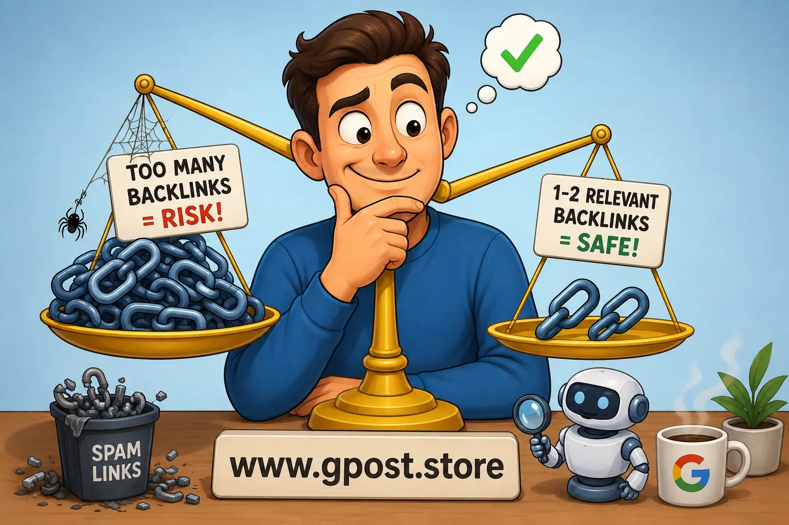

How Many Backlinks Per Guest Post Is Safe? Complete SEO Guide for 2026
How Many Backlinks Per Guest Post Is Safe? is one of the most important questions in modern SEO and guest blogging. Many website owners, bloggers, outreach specialists, and SEO beginners struggle to understand the right balance between link building and avoiding spam signals.
Guest posting still works in 2026, but only when done naturally and strategically. Google has become smarter at detecting manipulative link-building practices. That means adding excessive backlinks, over-optimized anchor texts, or irrelevant links inside guest posts can harm rankings instead of improving them.
In this complete SEO guide, you will learn the safe number of backlinks in guest posting, how many anchor texts a guest post should contain, guest post SEO guidelines for backlinks, and the most common guest posting mistakes with backlinks that can damage your SEO performance.

Safe guest posting strategies for natural backlink building in 2026
What Is How Many Backlinks Per Guest Post Is Safe??
The phrase How Many Backlinks Per Guest Post Is Safe? refers to the ideal number of links you should place inside a guest blog article without triggering spam signals or violating Google's SEO guidelines.
In most cases, SEO professionals recommend:
- 1 contextual dofollow backlink
- 1 branded or naked URL link
- Optional internal links to the publishing website
For most niches, keeping backlinks limited to 1–2 relevant links looks natural and editorially safe.
The goal of guest posting should not be just link insertion. Instead, the focus should be:
- Providing value to readers
- Building topical authority
- Generating referral traffic
- Improving brand visibility
- Creating trust signals
Why Guest Post Backlinks Matter for SEO
Backlinks remain one of the strongest ranking factors in Google's algorithm. High-quality backlinks from relevant websites help search engines understand authority, trust, and topical relevance.
Benefits of Guest Post Backlinks
- Improve search engine rankings
- Increase organic traffic
- Boost domain authority
- Strengthen brand visibility
- Build relationships in your niche
- Help pages get indexed faster
However, quality matters far more than quantity.
A single backlink from a highly relevant niche website can outperform dozens of spammy backlinks from unrelated blogs. Understanding how link building affects domain authority helps you make smarter decisions about which guest post placements will actually move the needle for your SEO.
Safe Number of Backlinks in Guest Posting
The safe number of backlinks in guest posting depends on several SEO factors, including article length, niche relevance, website authority, and editorial quality.
Recommended Backlink Limits
- 500–800 word article → 1 backlink
- 1000–1500 word article → 1–2 backlinks
- 2000+ word authority article → 2–3 natural backlinks maximum
Adding too many backlinks creates an unnatural footprint.
Google may interpret excessive links as manipulative link schemes, especially if the anchor texts are overly optimized.
What Looks Natural to Google?
- Relevant contextual links
- Brand mentions
- Editorial placement
- Helpful resources
- Balanced anchor text
Natural guest posts focus on helping readers first and SEO second.
How Many Anchor Texts Should a Guest Post Contain?
One of the biggest mistakes in link building is overusing exact-match anchor texts.
Many beginners think every backlink should contain their target keyword. That strategy no longer works safely.
Safe Anchor Text Distribution
- Branded anchors → 50%
- Naked URLs → 20%
- Generic anchors → 15%
- Partial match anchors → 10%
- Exact match anchors → 5%
This distribution helps maintain a natural backlink profile.
Examples of Good Anchor Texts
- YourBrand
- Visit Website
- Read More
- SEO outreach guide
- Guest blogging strategies
Examples of Risky Anchor Texts
- Best cheap SEO services
- Buy backlinks online
- Casino bonus Pakistan
- Payday loans fast
Over-optimized anchor texts are a major spam signal.
Guest Post SEO Guidelines for Backlinks
Following proper guest post SEO guidelines for backlinks helps protect your website from penalties and improves long-term ranking stability.
1. Prioritize Topical Relevance
Always get backlinks from websites related to your niche.
For example:
- SEO blogs → SEO backlinks
- Health websites → Health backlinks
- Finance blogs → Finance backlinks
Topical relevance often matters more than domain authority.
2. Avoid Spammy Websites
Do not publish guest posts on:
- PBNs
- AI-spam blogs
- Expired domain farms
- Casino-heavy websites
- Link-selling directories
3. Maintain Link Diversity
Use a combination of:
4. Use Natural Language
Your content should sound human-written and helpful.
Avoid stuffing keywords unnaturally into anchor texts.
5. Focus on Content Quality
Google values:
- Original content
- Expert insights
- Helpful explanations
- User experience
- Semantic relevance
Types of Guest Posting Opportunities
Free Guest Posting
Free guest posting involves contributing content without payment.
Benefits include:
- Relationship building
- Brand visibility
- Organic backlinks
However, approval rates are usually lower.
Paid Guest Posting
Paid placements are common in competitive niches.
Pricing depends on:
- Domain authority
- Organic traffic
- Niche quality
- Editorial standards
Understanding guest post pricing per domain authority explained helps you evaluate whether a paid placement is worth the investment before committing your budget.
Niche Blogs
Highly relevant niche blogs often provide better SEO value than general websites with high authority.
How to Find Guest Posting Opportunities
Google Search Operators
Competitor Backlink Analysis
Use SEO tools to analyze competitor backlinks.
Popular tools include:
- Ahrefs
- Semrush
- Moz
- Ubersuggest
Outreach Campaigns
Cold email outreach remains one of the best methods for finding guest post opportunities.
Social Media Networking
Many editors accept contributors through:
- LinkedIn
- X (Twitter)
- Facebook groups
- SEO communities
Step-by-Step Guest Posting Strategy
Step 1: Research Relevant Websites
Look for websites with:
- Real traffic
- Topical relevance
- Engaged audience
- Good content quality
Step 2: Build Outreach Lists
Create organized outreach spreadsheets containing:
- Website URL
- Editor name
- Email address
- Domain metrics
- Contact status
Step 3: Send Personalized Outreach
Personalized emails perform much better than generic templates.
Mention:
- Their recent articles
- Why your content helps readers
- Your expertise
This process becomes much more effective when combined with proper Guest Posting Outreach strategies.
Step 4: Write High-Quality Content
Your guest post should:
- Provide real value
- Be beginner-friendly
- Contain original insights
- Use proper formatting
Step 5: Add Natural Backlinks
Place backlinks contextually where they genuinely help readers.
Guest Posting Mistakes With Backlinks
Guest posting mistakes with backlinks can reduce rankings and waste outreach budgets.
1. Using Too Many Links
Overloading articles with backlinks appears manipulative.
2. Ignoring Relevance
Irrelevant backlinks provide weak SEO signals.
3. Exact Match Anchor Abuse
Repeated keyword anchors increase penalty risk.
4. Publishing on Low-Quality Sites
Spam websites can hurt trust signals.
5. Thin Content
Low-quality articles rarely generate SEO value.
6. Buying Mass Guest Posts
Cheap backlink packages often use automated spam networks. Learn more about Guest Posting Mistakes That Hurt SEO Rankings to avoid the errors that most commonly damage backlink profiles and organic performance.
Hidden SEO Realities Most Beginners Never Hear About
Many SEO beginners focus only on domain authority while ignoring deeper ranking factors.
Why High-DA Links Sometimes Fail
- No topical relevance
- Low organic traffic
- Weak indexing
- Spam outbound links
Why Smaller Niche Sites Can Perform Better
Highly relevant niche blogs often transfer stronger contextual signals than generic authority websites.
Why Outreach Reply Rates Drop
Editors receive hundreds of outreach emails daily.
Generic templates usually fail because they look automated. Applying Outreach Response Rate Increase Tips can help you craft emails that stand out in crowded inboxes and dramatically improve your reply rates.
Myth vs Reality in Guest Posting SEO
Myth: More Backlinks Always Improve Rankings
Reality: Low-quality backlinks can dilute your backlink profile.
Myth: Domain Authority Is Everything
Reality: Relevance and traffic often matter more.
Myth: Exact Match Anchors Rank Faster
Reality: Over-optimization can trigger spam filters.
Myth: Guest Posting Is Dead
Reality: Low-quality guest posting is dead. Strategic guest posting still works extremely well.
Advanced Guest Posting Strategies for Experienced SEOs
Link Velocity Management
Sudden spikes in backlinks may appear unnatural for newer websites.
Build backlinks gradually.
Entity-Based SEO
Google increasingly understands entities and semantic relationships.
Mentions of your brand across relevant websites strengthen topical authority.
Semantic Relevance Scoring
Modern SEO focuses on context, entities, and topic clusters rather than simple keyword matching.
Scaling Outreach Safely
Automation helps scale campaigns, but over-automation reduces personalization and reply rates. Working with a reliable Best Guest Posting Service can help you scale safely while maintaining the editorial quality standards that Google rewards.
Is Guest Posting Still Worth It in 2026?
Yes, guest posting remains highly effective when done correctly.
Successful guest posting now focuses on:
- Authority building
- Brand visibility
- Topical relevance
- Editorial quality
- Trust signals
Google rewards websites with natural backlink profiles and strong topical expertise.
When Should You Avoid Guest Posting?
Guest posting may not be ideal if:
- You rely on spam networks
- You buy low-quality links
- Your content quality is poor
- You use manipulative anchors
- You ignore niche relevance
In these situations, guest posting can become risky instead of beneficial.
SEO Safety Guidelines for Guest Post Backlinks
- Focus on quality over quantity
- Prioritize niche relevance
- Use natural anchor texts
- Avoid spammy websites
- Write valuable content
- Maintain link diversity
- Monitor backlink profiles regularly
Frequently Asked Questions
How many backlinks per guest post is safe for SEO beginners?
For beginners, 1–2 contextual backlinks per guest post are safe. This maintains natural link profile, avoids spam signals, and supports steady SEO growth without risking penalties.
What is the safe number of backlinks per guest post in SEO terms?
The safe approach is usually one primary contextual backlink and optionally one supporting link. This keeps content relevant, natural, and aligned with modern SEO guidelines.
What mistakes should be avoided when adding backlinks in guest posts?
Avoid keyword stuffing, irrelevant links, over-optimization, and excessive backlinks. These mistakes reduce trust, harm rankings, and may trigger search engine spam filters.
Is one backlink better than multiple backlinks in a guest post?
Yes, one high-quality contextual backlink is often stronger than multiple weak links. It improves relevance, maintains natural flow, and builds stronger SEO authority. A well-placed Dofollow Guest Post backlink from a relevant niche website consistently delivers more lasting SEO value than several nofollow or low-relevance links.
How do you safely add backlinks in a guest posting strategy?
Place backlinks naturally within relevant content using branded or partial anchors. Keep it limited to 1–2 links and focus on user value over quantity.
What is the best SEO strategy for guest post backlinks?
Use contextual, niche-relevant backlinks with natural anchors. Prioritize authority websites, strong topical relevance, and balanced internal and external linking structure.
How does backlink quantity affect guest post ranking in Google?
Too many backlinks reduce trust signals and may dilute SEO value. A limited number of high-quality links helps maintain stable rankings and stronger authority.
Which tools help analyze backlinks in guest posting SEO?
SEO tools like Ahrefs, SEMrush, and Google Search Console help track backlink quality, anchor distribution, and referring domains for safe optimization.
How do guest post backlinks improve website authority and traffic?
They pass authority from niche sites, improve domain trust, and generate referral traffic, leading to better organic visibility and long-term SEO performance. Reviewing a real Blogger Outreach Case Study can show you exactly how strategic backlinks from guest posts translate into measurable ranking and traffic improvements.
What is the future of guest post backlinks in SEO updates?
Future SEO focuses on relevance and quality over quantity. Natural, contextual backlinks will matter more as Google continues reducing impact of spammy link building.
Conclusion
How Many Backlinks Per Guest Post Is Safe? ultimately depends on quality, relevance, editorial value, and natural implementation. In most situations, 1–2 highly relevant backlinks are considered safe and effective for modern SEO.
Instead of chasing large numbers of backlinks, focus on building relationships, creating valuable content, and earning links from trusted niche websites. Sustainable SEO success comes from authority, trust, and topical relevance rather than aggressive link insertion.
If you want to improve your outreach campaigns and guest blogging strategy, read our complete guide on Guest Posting vs Niche Edits for deeper SEO insights.